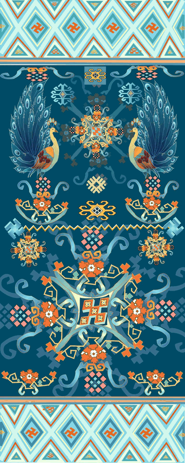

CULTURAL VISUAL MOTION
文化视觉动态化设计
AIGC STORYTELLING
×
CULTURAL MOTION
通过AIGC影像与动态图形，
探索文化内容在当代数字媒介中的动态表达。
TWO WAYS TO MOVE CULTURE
探索文化内容在数字媒介中的两种动态表达方式。
本项目通过AIGC影像叙事与西兰卡普纹样动态化两个案例，
分别从「影像叙事」和「动态图形」两个方向，
探索文化视觉的当代表达。
TWO WAYS
TO MOVE CULTURE
CINEMATIC
AIGC VISUAL STORYTELLING
通过人物、分镜与动态影像建立视觉叙事，
将文化氛围转化为具有电影感的数字影像。
GRAPHIC
XILANKAPU MOTION
以西兰卡普纹样为视觉基础，
通过动态图形的运动与节奏探索传统纹样的数字化表达。
AIGC VISUAL
STORYTELLING
AIGC视频制作
通过人物、分镜与动态影像，
探索具有东方视觉氛围的数字影像表达。

以人物视觉作为影像叙事中的核心视觉元素。
人物造型承载着整个叙事的东方美学基调。

XILANKAPU
MOTION
西兰卡普纹样动态化设计
以西兰卡普纹样为视觉基础，
探索传统图形在数字媒介中的动态表达。
将传统纹样从静态视觉转化为动态图形，
通过运动、节奏与循环建立新的数字视觉体验。
 FRAME 01
FRAME 01
 FRAME 02
FRAME 02
 FRAME 03
FRAME 03
静态画面 → 变化过程 → 动态结果

ONE CULTURE.
TWO VISUAL LANGUAGES.
AIGC VIDEO
- CINEMATIC
- CHARACTER
- STORY
- CAMERA
- ATMOSPHERE
XILANKAPU MOTION
- GRAPHIC
- PATTERN
- SHAPE
- RHYTHM
- LOOP
FROM STORYTELLING
TO GRAPHIC MOTION
从影像叙事到动态图形，
以不同的视觉语言探索文化内容的数字化表达。
CULTURE
IN MOTION.
REINTERPRETING CULTURE
THROUGH CONTEMPORARY
DIGITAL VISUAL LANGUAGE.
让文化内容从静态视觉走向动态表达。
END OF PROJECT